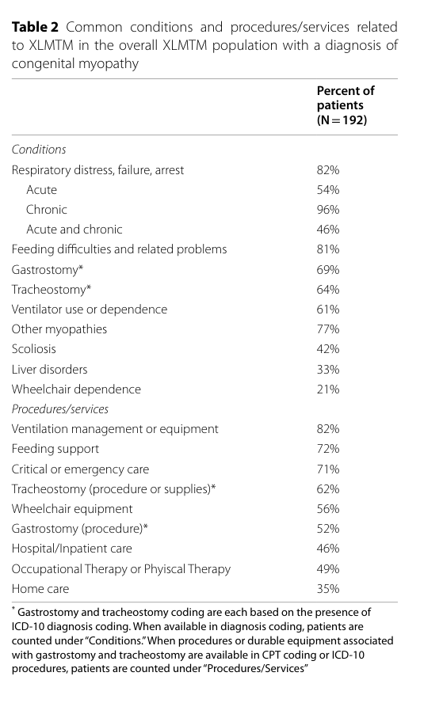

Centronuclear myopathy (CNM) is a genetically heterogeneous group of congenital myopathies defined histopathologically by an abnormally high proportion of skeletal muscle fibers with centrally located nuclei, typically accompanied by fiber hypotrophy, type 1 fiber predominance, and central aggregation of oxidative enzyme activity. The shared mechanistic theme is disruption of membrane remodeling and the triad / excitation-contraction coupling (ECC) apparatus that couples the transverse (T) tubule to the sarcoplasmic reticulum. The main forms are caused by mutations in MTM1 (X-linked myotubular myopathy, the most severe form, encoding the phosphoinositide phosphatase myotubularin), DNM2 (autosomal dominant CNM, encoding the mechanoenzyme dynamin 2), and BIN1 (autosomal recessive CNM, encoding the membrane-curvature-sensing amphiphysin 2), with additional rarer forms due to RYR1, TTN, SPEG, and CCDC78. MTM1, BIN1, and DNM2 act in membrane remodeling and trafficking, while RyR1 directly regulates ECC, and these genes converge on shared T-tubule remodeling and ECC defects. The phenotype ranges from severe neonatal hypotonia and respiratory failure in X-linked myotubular myopathy to milder childhood- or adult-onset proximal weakness in DNM2-related disease.
Ask a research question about Centronuclear Myopathy. OpenScientist will conduct autonomous deep research using the Disorder Mechanisms Knowledge Base and PubMed literature (typically 10-30 minutes).
Do not include personal health information in your question. Questions and results are cached in your browser's local storage.
name: Centronuclear Myopathy
creation_date: "2026-06-16T00:00:00Z"
category: Mendelian
description: >
Centronuclear myopathy (CNM) is a genetically heterogeneous group of congenital
myopathies defined histopathologically by an abnormally high proportion of
skeletal muscle fibers with centrally located nuclei, typically accompanied by
fiber hypotrophy, type 1 fiber predominance, and central aggregation of oxidative
enzyme activity. The shared mechanistic theme is disruption of membrane remodeling
and the triad / excitation-contraction coupling (ECC) apparatus that couples the
transverse (T) tubule to the sarcoplasmic reticulum. The main forms are caused by
mutations in MTM1 (X-linked myotubular myopathy, the most severe form, encoding
the phosphoinositide phosphatase myotubularin), DNM2 (autosomal dominant CNM,
encoding the mechanoenzyme dynamin 2), and BIN1 (autosomal recessive CNM, encoding
the membrane-curvature-sensing amphiphysin 2), with additional rarer forms due to
RYR1, TTN, SPEG, and CCDC78. MTM1, BIN1, and DNM2 act in membrane remodeling and
trafficking, while RyR1 directly regulates ECC, and these genes converge on shared
T-tubule remodeling and ECC defects. The phenotype ranges from severe neonatal
hypotonia and respiratory failure in X-linked myotubular myopathy to milder
childhood- or adult-onset proximal weakness in DNM2-related disease.
disease_term:
preferred_term: centronuclear myopathy
term:
id: MONDO:0018947
label: centronuclear myopathy
parents:
- Congenital myopathy
has_subtypes:
- name: XLMTM
display_name: X-linked myotubular myopathy (MTM1)
subtype_term:
preferred_term: X-linked myotubular myopathy
term:
id: MONDO:0010683
label: X-linked myotubular myopathy
description: >-
X-linked myotubular myopathy is caused by hemizygous loss-of-function mutations
in MTM1 encoding myotubularin, a phosphoinositide 3-phosphatase. It is the most
severe and best-characterized form, with ~80% of affected males presenting with
severe (classic) neonatal weakness, hypotonia, and respiratory failure.
evidence:
- reference: PMID:20301605
reference_title: "X-Linked Myotubular Myopathy."
supports: SUPPORT
evidence_source: HUMAN_CLINICAL
snippet: >-
Approximately 80% of affected males present with severe (classic) X-MTM
characterized by polyhydramnios, decreased fetal movement, and neonatal
weakness, hypotonia, and respiratory failure.
explanation: >-
GeneReviews establishes the severe neonatal MTM1 presentation as the
dominant XLMTM phenotype.
- reference: PMID:8640223
reference_title: "A gene mutated in X-linked myotubular myopathy defines a new putative tyrosine phosphatase family conserved in yeast."
supports: SUPPORT
evidence_source: HUMAN_CLINICAL
snippet: >-
X-linked recessive myotubular myopathy (MTM1) is characterized by severe
hypotonia and generalized muscle weakness, with impaired maturation of
muscle fibres.
explanation: >-
The MTM1 gene-discovery paper defines the X-linked myotubular myopathy
clinical entity.
- name: AD-CNM
display_name: Autosomal dominant centronuclear myopathy (DNM2)
subtype_term:
preferred_term: autosomal dominant centronuclear myopathy
term:
id: MONDO:0008048
label: autosomal dominant centronuclear myopathy
description: >-
Autosomal dominant CNM is caused by heterozygous missense mutations in DNM2
encoding dynamin 2, a large GTPase involved in membrane fission and endocytosis.
It typically presents with milder, slowly progressive weakness of childhood to
adult onset, often with ptosis and ophthalmoplegia.
evidence:
- reference: PMID:16227997
reference_title: "Mutations in dynamin 2 cause dominant centronuclear myopathy."
supports: SUPPORT
evidence_source: HUMAN_CLINICAL
snippet: >-
Autosomal dominant centronuclear myopathy is a rare congenital myopathy
characterized by delayed motor milestones and muscular weakness.
explanation: >-
The DNM2 gene-discovery paper defines the autosomal dominant CNM clinical
entity and its causal gene.
- name: AR-CNM
display_name: Autosomal recessive centronuclear myopathy (BIN1)
subtype_term:
preferred_term: BIN1-related autosomal recessive centronuclear myopathy
term:
id: MONDO:0009709
label: myopathy, centronuclear, 2
description: >-
Autosomal recessive CNM is most classically caused by biallelic mutations in
BIN1 encoding amphiphysin 2, a BAR-domain membrane-tubulating protein essential
for T-tubule biogenesis. Onset and severity are generally intermediate between
the X-linked and dominant forms.
evidence:
- reference: PMID:17676042
reference_title: "Mutations in amphiphysin 2 (BIN1) disrupt interaction with dynamin 2 and cause autosomal recessive centronuclear myopathy."
supports: SUPPORT
evidence_source: HUMAN_CLINICAL
snippet: >-
we identified homozygous mutations in amphiphysin 2 (BIN1) in three
families with autosomal recessive inheritance.
explanation: >-
The BIN1 gene-discovery paper defines the autosomal recessive CNM form and
its causal gene.
- name: RYR1-CNM
display_name: RYR1-related centronuclear myopathy
subtype_term:
preferred_term: autosomal recessive centronuclear myopathy
term:
id: MONDO:0015705
label: autosomal recessive centronuclear myopathy
description: >-
RYR1 mutations, encoding the skeletal muscle ryanodine receptor / calcium
release channel, can produce a centronuclear myopathy phenotype, expanding the
histological spectrum of RYR1-related congenital myopathy to include central
nuclei. RyR1 directly regulates excitation-contraction coupling.
evidence:
- reference: PMID:34768808
reference_title: "Common Pathogenic Mechanisms in Centronuclear and Myotubular Myopathies and Latest Treatment Advances."
supports: SUPPORT
evidence_source: OTHER
snippet: >-
the RYR1 gene encoding the skeletal muscle calcium release
channel/ryanodine receptor
explanation: >-
The review lists RYR1 among the main CNM-causing genes, encoding the
skeletal muscle calcium release channel.
- name: TTN-CNM
display_name: TTN-related centronuclear myopathy
description: >-
Recessive mutations in TTN (titin) have been associated with a centronuclear
myopathy phenotype, often with cardiac involvement, and TTN is recognized among
the genes contributing to the CNM disease definition.
- name: SPEG-CNM
display_name: SPEG-related centronuclear myopathy
subtype_term:
preferred_term: SPEG-related centronuclear myopathy
term:
id: MONDO:0014418
label: myopathy, centronuclear, 5
description: >-
Recessive mutations in SPEG (striated muscle preferentially expressed protein
kinase) cause a centronuclear myopathy that may be accompanied by dilated
cardiomyopathy, reflecting SPEG's role in triad maturation.
inheritance:
- name: X-linked recessive
inheritance_term:
preferred_term: X-linked recessive inheritance
term:
id: HP:0001419
label: X-linked recessive inheritance
description: >-
X-linked myotubular myopathy (the most severe and common CNM form) is inherited
in an X-linked recessive manner; affected males inherit a hemizygous MTM1
pathogenic variant.
evidence:
- reference: PMID:20301605
reference_title: "X-Linked Myotubular Myopathy."
supports: SUPPORT
evidence_source: HUMAN_CLINICAL
snippet: >-
X-MTM is inherited in an X-linked manner.
explanation: >-
GeneReviews documents X-linked inheritance for the MTM1-related (XLMTM) form.
- name: Autosomal dominant
inheritance_term:
preferred_term: Autosomal dominant inheritance
term:
id: HP:0000006
label: Autosomal dominant inheritance
description: >-
DNM2-related CNM is inherited in an autosomal dominant manner.
evidence:
- reference: PMID:16227997
reference_title: "Mutations in dynamin 2 cause dominant centronuclear myopathy."
supports: SUPPORT
evidence_source: HUMAN_CLINICAL
snippet: >-
Autosomal dominant centronuclear myopathy is a rare congenital myopathy
characterized by delayed motor milestones and muscular weakness.
explanation: >-
Documents the autosomal dominant inheritance of DNM2-related CNM.
- name: Autosomal recessive
inheritance_term:
preferred_term: Autosomal recessive inheritance
term:
id: HP:0000007
label: Autosomal recessive inheritance
description: >-
BIN1-related CNM (and other rarer forms such as SPEG, TTN, and recessive RYR1)
follows autosomal recessive inheritance.
evidence:
- reference: PMID:17676042
reference_title: "Mutations in amphiphysin 2 (BIN1) disrupt interaction with dynamin 2 and cause autosomal recessive centronuclear myopathy."
supports: SUPPORT
evidence_source: HUMAN_CLINICAL
snippet: >-
we identified homozygous mutations in amphiphysin 2 (BIN1) in three
families with autosomal recessive inheritance.
explanation: >-
Documents the autosomal recessive inheritance of BIN1-related CNM.
pathophysiology:
- name: MTM1 myotubularin phosphatase deficiency
description: >
Loss-of-function MTM1 mutations abolish or reduce myotubularin, a
phosphoinositide 3-phosphatase that dephosphorylates PtdIns3P (and
PtdIns(3,5)P2). Its deficiency dysregulates phosphoinositide signaling at the
T-tubule and sarcoplasmic reticulum, the upstream lesion in X-linked myotubular
myopathy and the most severe CNM form.
gene:
preferred_term: MTM1
description: >
Myotubularin, a phosphoinositide phosphatase whose loss of function causes
X-linked myotubular myopathy.
modifier: DECREASED
term:
id: hgnc:7448
label: MTM1
cell_types:
- preferred_term: Skeletal muscle fiber
term:
id: CL:0008002
label: skeletal muscle fiber
biological_processes:
- preferred_term: Phosphatidylinositol dephosphorylation
modifier: DECREASED
term:
id: GO:0046856
label: phosphatidylinositol dephosphorylation
evidence:
- reference: PMID:8640223
reference_title: "A gene mutated in X-linked myotubular myopathy defines a new putative tyrosine phosphatase family conserved in yeast."
supports: SUPPORT
evidence_source: HUMAN_CLINICAL
snippet: >-
The protein contains the consensus sequence for the active site of tyrosine
phosphatases, a wide class of proteins involved in signal transduction.
explanation: >-
Identifies myotubularin as a phosphatase, the molecular basis of the MTM1
lesion in XLMTM.
- reference: PMID:34768808
reference_title: "Common Pathogenic Mechanisms in Centronuclear and Myotubular Myopathies and Latest Treatment Advances."
supports: SUPPORT
evidence_source: OTHER
snippet: >-
the MTM1 gene encoding the phosphoinositide phosphatase myotubularin
(myotubular myopathy)
explanation: >-
Confirms MTM1 encodes the phosphoinositide phosphatase myotubularin
underlying myotubular myopathy.
downstream:
- target: Disrupted triad organization and T-tubule remodeling
description: >
Phosphoinositide dysregulation impairs T-tubule biogenesis and triad
assembly in skeletal muscle.
causal_link_type: DIRECT
- name: DNM2 dynamin-2 dysfunction
description: >
Heterozygous missense DNM2 mutations alter dynamin 2, a large mechanoenzyme
GTPase mediating membrane fission, endocytosis, actin assembly, and centrosome
cohesion. Disease variants are associated with increased dynamin-2
abundance/activity, perturbing membrane trafficking and T-tubule/triad
organization. Dynamin 2 is a crucial node in CNM pathophysiology and a shared
therapeutic target across CNM forms.
gene:
preferred_term: DNM2
description: >
Dynamin 2, a membrane-remodeling GTPase; gain-of-function missense variants
cause autosomal dominant centronuclear myopathy.
modifier: INCREASED
term:
id: hgnc:2974
label: DNM2
cell_types:
- preferred_term: Skeletal muscle fiber
term:
id: CL:0008002
label: skeletal muscle fiber
biological_processes:
- preferred_term: Endocytosis
modifier: ABNORMAL
term:
id: GO:0006897
label: endocytosis
evidence:
- reference: PMID:16227997
reference_title: "Mutations in dynamin 2 cause dominant centronuclear myopathy."
supports: SUPPORT
evidence_source: HUMAN_CLINICAL
snippet: >-
we identified recurrent and de novo missense mutations in the gene dynamin 2
(DNM2, 19p13.2), which encodes a protein involved in endocytosis and
membrane trafficking, actin assembly and centrosome cohesion.
explanation: >-
Establishes DNM2 missense mutations as the cause of dominant CNM and defines
dynamin 2's role in endocytosis and membrane trafficking.
- reference: PMID:34768808
reference_title: "Common Pathogenic Mechanisms in Centronuclear and Myotubular Myopathies and Latest Treatment Advances."
supports: SUPPORT
evidence_source: OTHER
snippet: >-
Dynamin 2 plays a crucial role in CNM physiopathology and has been validated
as a common therapeutic target for three CNM forms.
explanation: >-
Establishes dynamin 2 as a central, convergent node in CNM pathophysiology.
- reference: PMID:37547294
reference_title: "DNM2 levels normalization improves muscle phenotypes of a novel mouse model for moderate centronuclear myopathy."
supports: SUPPORT
evidence_source: MODEL_ORGANISM
snippet: >-
Normalization of DNM2 levels through intramuscular injection of AAV-shDnm2
targeting Dnm2 mRNA significantly improved histopathology and muscle and
myofiber hypotrophy.
explanation: >-
A DNM2 knock-in mouse model shows that normalizing excess DNM2 reverses
CNM phenotypes, supporting a causal role for increased DNM2.
downstream:
- target: Disrupted triad organization and T-tubule remodeling
description: >
Abnormal dynamin-2 activity disrupts T-tubule and triad membrane
architecture.
causal_link_type: DIRECT
- name: BIN1 amphiphysin-2 membrane-tubulation deficiency
description: >
Biallelic BIN1 mutations impair amphiphysin 2, a BAR-domain protein that senses
and generates membrane curvature required for T-tubule biogenesis. Missense
mutations in the BAR domain disrupt membrane tubulation, while truncation of the
C-terminal SH3 domain abrogates the interaction with DNM2 and its recruitment to
membrane tubules, interfering with remodeling of T tubules and endocytic
membranes.
gene:
preferred_term: BIN1
description: >
Amphiphysin 2 (BIN1), a membrane-curvature-sensing BAR-domain protein;
biallelic loss of function causes autosomal recessive CNM.
modifier: DECREASED
term:
id: hgnc:1052
label: BIN1
cell_types:
- preferred_term: Skeletal muscle fiber
term:
id: CL:0008002
label: skeletal muscle fiber
biological_processes:
- preferred_term: Membrane tubulation
modifier: DECREASED
term:
id: GO:0097749
label: membrane tubulation
evidence:
- reference: PMID:17676042
reference_title: "Mutations in amphiphysin 2 (BIN1) disrupt interaction with dynamin 2 and cause autosomal recessive centronuclear myopathy."
supports: SUPPORT
evidence_source: IN_VITRO
snippet: >-
Two missense mutations affecting the BAR (Bin1/amphiphysin/RVS167) domain
disrupt its membrane tubulation properties in transfected cells, and a
partial truncation of the C-terminal SH3 domain abrogates the interaction
with DNM2 and its recruitment to the membrane tubules.
explanation: >-
Demonstrates that BIN1 mutations impair membrane tubulation and the
BIN1-DNM2 interaction in cellular assays.
- reference: PMID:17676042
reference_title: "Mutations in amphiphysin 2 (BIN1) disrupt interaction with dynamin 2 and cause autosomal recessive centronuclear myopathy."
supports: SUPPORT
evidence_source: IN_VITRO
snippet: >-
Our results suggest that mutations in BIN1 cause centronuclear myopathy by
interfering with remodeling of T tubules and/or endocytic membranes
explanation: >-
Links BIN1 dysfunction to impaired T-tubule remodeling, the convergent CNM
mechanism.
downstream:
- target: Disrupted triad organization and T-tubule remodeling
description: >
Loss of BIN1 membrane-tubulation activity impairs T-tubule biogenesis.
causal_link_type: DIRECT
- name: Disrupted triad organization and T-tubule remodeling
description: >
Converging on a final common pathway, the CNM genes disrupt the structure of
the triad — the close apposition of the T-tubule with the terminal sarcoplasmic
reticulum that regulates excitation-contraction coupling. CNM animal models
across genotypes share pathological anomalies in T-tubule remodeling, ECC,
organelle mispositioning, and protein homeostasis. T-tubule disorganization
displaces the calcium-handling machinery and contributes to mispositioning of
nuclei and organelles toward the fiber center.
cell_types:
- preferred_term: Skeletal muscle fiber
term:
id: CL:0008002
label: skeletal muscle fiber
biological_processes:
- preferred_term: T-tubule organization
modifier: ABNORMAL
term:
id: GO:0033292
label: T-tubule organization
evidence:
- reference: PMID:34768808
reference_title: "Common Pathogenic Mechanisms in Centronuclear and Myotubular Myopathies and Latest Treatment Advances."
supports: SUPPORT
evidence_source: OTHER
snippet: >-
Several CNM animal models have been generated or identified, which confirm
shared pathological anomalies in T-tubule remodeling, ECC, organelle
mispositioning, protein homeostasis, neuromuscular junction, and muscle
regeneration.
explanation: >-
Establishes shared T-tubule remodeling and ECC defects as the convergent
CNM mechanism across genotypes.
- reference: PMID:25168790
reference_title: "Triadopathies: an emerging class of skeletal muscle diseases."
supports: SUPPORT
evidence_source: OTHER
snippet: >-
The triad is a skeletal muscle substructure responsible for the regulation
of excitation-contraction coupling. It is formed by the close apposition of
the T-tubule and the terminal sarcoplasmic reticulum.
explanation: >-
Defines the triad structure whose disorganization underlies CNM as a
triadopathy.
downstream:
- target: Impaired excitation-contraction coupling
description: >
Disorganized triads uncouple the T-tubule voltage sensor from
sarcoplasmic-reticulum calcium release.
causal_link_type: DIRECT
- name: Impaired excitation-contraction coupling
description: >
Triad disorganization impairs excitation-contraction coupling, the process by
which sarcolemmal depolarization triggers release of sequestered calcium from
the sarcoplasmic reticulum. Triadopathies are at their root caused by defects in
excitation-contraction coupling and intracellular calcium homeostasis. Defective
ECC reduces calcium transients and force production, producing muscle weakness.
cell_types:
- preferred_term: Skeletal muscle fiber
term:
id: CL:0008002
label: skeletal muscle fiber
biological_processes:
- preferred_term: Release of sequestered calcium ion into cytosol by sarcoplasmic reticulum
modifier: DECREASED
term:
id: GO:0014808
label: release of sequestered calcium ion into cytosol by sarcoplasmic reticulum
evidence:
- reference: PMID:25168790
reference_title: "Triadopathies: an emerging class of skeletal muscle diseases."
supports: SUPPORT
evidence_source: OTHER
snippet: >-
These disorders, at their root, are caused by defects in excitation
contraction coupling and intracellular calcium homeostasis.
explanation: >-
Establishes impaired ECC and calcium handling as the root mechanism of
triadopathies including CNM.
downstream:
- target: Muscle weakness and central nuclei phenotype
description: >
Reduced calcium release and force production cause the clinical weakness, and
the membrane-remodeling/organelle-mispositioning defect produces the
centronuclear histopathology.
causal_link_type: DIRECT
- name: Muscle weakness and central nuclei phenotype
description: >
The clinical-histopathological endpoint of CNM: skeletal muscle weakness and
hypotonia accompanied by the diagnostic finding of abnormally centralized
myonuclei in a high proportion of muscle fibers, with fiber hypotrophy and
type 1 fiber predominance.
cell_types:
- preferred_term: Skeletal muscle fiber
term:
id: CL:0008002
label: skeletal muscle fiber
evidence:
- reference: PMID:34768808
reference_title: "Common Pathogenic Mechanisms in Centronuclear and Myotubular Myopathies and Latest Treatment Advances."
supports: SUPPORT
evidence_source: OTHER
snippet: >-
Centronuclear myopathies (CNM) are rare congenital disorders characterized
by muscle weakness and structural defects including fiber hypotrophy and
organelle mispositioning.
explanation: >-
Summarizes the convergent CNM endpoint of muscle weakness with fiber
hypotrophy and organelle (including nuclear) mispositioning.
phenotypes:
- name: Neonatal hypotonia
description: >
Hypotonia present from birth, severe and generalized in X-linked myotubular
myopathy and milder in dominant forms.
phenotype_term:
preferred_term: Neonatal hypotonia
term:
id: HP:0001319
label: Neonatal hypotonia
evidence:
- reference: PMID:20301605
reference_title: "X-Linked Myotubular Myopathy."
supports: SUPPORT
evidence_source: HUMAN_CLINICAL
snippet: >-
Approximately 80% of affected males present with severe (classic) X-MTM
characterized by polyhydramnios, decreased fetal movement, and neonatal
weakness, hypotonia, and respiratory failure.
explanation: >-
GeneReviews documents neonatal hypotonia as a core feature of the severe
XLMTM presentation.
- name: Polyhydramnios
subtype: XLMTM
description: >
Excess amniotic fluid in pregnancy, a prenatal feature of the severe
(classic) X-linked myotubular myopathy presentation reflecting reduced fetal
swallowing from in-utero weakness.
phenotype_term:
preferred_term: Polyhydramnios
term:
id: HP:0001561
label: Polyhydramnios
evidence:
- reference: PMID:20301605
reference_title: "X-Linked Myotubular Myopathy."
supports: SUPPORT
evidence_source: HUMAN_CLINICAL
snippet: >-
Approximately 80% of affected males present with severe (classic) X-MTM
characterized by polyhydramnios, decreased fetal movement, and neonatal
weakness, hypotonia, and respiratory failure.
explanation: >-
GeneReviews documents polyhydramnios as a prenatal feature of the severe
XLMTM presentation.
- name: Decreased fetal movement
subtype: XLMTM
description: >
Reduced fetal movements in utero, a prenatal hallmark of severe (classic)
XLMTM caused by profound congenital muscle weakness.
phenotype_term:
preferred_term: Decreased fetal movement
term:
id: HP:0001558
label: Decreased fetal movement
evidence:
- reference: PMID:20301605
reference_title: "X-Linked Myotubular Myopathy."
supports: SUPPORT
evidence_source: HUMAN_CLINICAL
snippet: >-
Approximately 80% of affected males present with severe (classic) X-MTM
characterized by polyhydramnios, decreased fetal movement, and neonatal
weakness, hypotonia, and respiratory failure.
explanation: >-
GeneReviews documents decreased fetal movement as a prenatal feature of
the severe XLMTM presentation.
- name: Motor delay
description: >
Delayed acquisition of motor milestones, significantly delayed in severe
XLMTM and a defining feature of DNM2-related autosomal dominant CNM.
phenotype_term:
preferred_term: Delayed motor milestones
term:
id: HP:0001270
label: Motor delay
evidence:
- reference: PMID:20301605
reference_title: "X-Linked Myotubular Myopathy."
supports: SUPPORT
evidence_source: HUMAN_CLINICAL
snippet: >-
Motor milestones are significantly delayed
explanation: >-
GeneReviews documents significantly delayed motor milestones in XLMTM.
- reference: PMID:16227997
reference_title: "Mutations in dynamin 2 cause dominant centronuclear myopathy."
supports: SUPPORT
evidence_source: HUMAN_CLINICAL
snippet: >-
Autosomal dominant centronuclear myopathy is a rare congenital myopathy
characterized by delayed motor milestones and muscular weakness.
explanation: >-
The DNM2 gene-discovery paper describes delayed motor milestones as a
defining feature of autosomal dominant CNM.
- name: Generalized muscle weakness
description: >
Generalized skeletal muscle weakness, profound in XLMTM neonates and more
slowly progressive and predominantly proximal/limb-girdle in DNM2-related
disease.
phenotype_term:
preferred_term: Generalized muscle weakness
term:
id: HP:0003324
label: Generalized muscle weakness
evidence:
- reference: PMID:8640223
reference_title: "A gene mutated in X-linked myotubular myopathy defines a new putative tyrosine phosphatase family conserved in yeast."
supports: SUPPORT
evidence_source: HUMAN_CLINICAL
snippet: >-
X-linked recessive myotubular myopathy (MTM1) is characterized by severe
hypotonia and generalized muscle weakness, with impaired maturation of
muscle fibres.
explanation: >-
Documents severe generalized muscle weakness as a defining feature of XLMTM.
- name: Respiratory failure requiring assisted ventilation
description: >
Respiratory muscle weakness causing respiratory failure; in severe XLMTM
respiratory failure is nearly uniform with most individuals requiring 24-hour
ventilatory assistance.
phenotype_term:
preferred_term: Respiratory failure requiring assisted ventilation
term:
id: HP:0004887
label: Respiratory failure requiring assisted ventilation
evidence:
- reference: PMID:20301605
reference_title: "X-Linked Myotubular Myopathy."
supports: SUPPORT
evidence_source: HUMAN_CLINICAL
snippet: >-
Respiratory failure is nearly uniform, with most individuals requiring
24-hour ventilatory assistance.
explanation: >-
GeneReviews documents near-universal ventilator-dependent respiratory
failure in severe XLMTM.
- reference: PMID:39285418
reference_title: "An algorithm for discontinuing mechanical ventilation in boys with x-linked myotubular myopathy after positive response to gene therapy: the ASPIRO experience."
supports: SUPPORT
evidence_source: HUMAN_CLINICAL
snippet: >-
At birth, 85-90% of children with XLMTM require mechanical ventilation
explanation: >-
Independent cohort/trial data corroborating ventilator dependence at birth
in XLMTM.
- name: Weakness of facial musculature
description: >
Facial muscle weakness, frequently present in XLMTM where weakness often
involves facial and extraocular muscles.
phenotype_term:
preferred_term: Weakness of facial musculature
term:
id: HP:0030319
label: Weakness of facial musculature
evidence:
- reference: PMID:20301605
reference_title: "X-Linked Myotubular Myopathy."
supports: SUPPORT
evidence_source: HUMAN_CLINICAL
snippet: >-
Weakness is profound and often involves facial and extraocular muscles.
explanation: >-
GeneReviews documents facial muscle involvement in XLMTM.
- name: Ptosis
description: >
Drooping of the eyelids, reported across the CNM spectrum and a surveillance
target in XLMTM (annual ophthalmologic examination to evaluate for ptosis).
phenotype_term:
preferred_term: Ptosis
term:
id: HP:0000508
label: Ptosis
evidence:
- reference: PMID:20301605
reference_title: "X-Linked Myotubular Myopathy."
supports: SUPPORT
evidence_source: HUMAN_CLINICAL
snippet: >-
annual ophthalmologic examinations to evaluate for ophthalmoplegia, ptosis,
and myopia
explanation: >-
GeneReviews lists ptosis among the ophthalmologic features monitored in
XLMTM.
- name: Ophthalmoplegia
description: >
External ophthalmoplegia / limitation of extraocular movements, a feature that
distinguishes CNM from many other congenital myopathies; weakness in XLMTM often
involves extraocular muscles.
phenotype_term:
preferred_term: Ophthalmoplegia
term:
id: HP:0000602
label: Ophthalmoplegia
evidence:
- reference: PMID:20301605
reference_title: "X-Linked Myotubular Myopathy."
supports: SUPPORT
evidence_source: HUMAN_CLINICAL
snippet: >-
Weakness is profound and often involves facial and extraocular muscles.
explanation: >-
GeneReviews documents extraocular muscle involvement underlying
ophthalmoplegia in XLMTM.
- name: Myopia
description: >
Nearsightedness, an ophthalmologic surveillance target in XLMTM evaluated by
annual examination alongside ophthalmoplegia and ptosis.
phenotype_term:
preferred_term: Myopia
term:
id: HP:0000545
label: Myopia
evidence:
- reference: PMID:20301605
reference_title: "X-Linked Myotubular Myopathy."
supports: SUPPORT
evidence_source: HUMAN_CLINICAL
snippet: >-
ophthalmologic examinations to evaluate for ophthalmoplegia, ptosis, and
myopia
explanation: >-
GeneReviews lists myopia among the ophthalmologic features monitored in
XLMTM.
- name: Feeding difficulties
description: >
Feeding difficulties are common in severe CNM, frequently necessitating
gastrostomy tube feeding.
phenotype_term:
preferred_term: Feeding difficulties
term:
id: HP:0011968
label: Feeding difficulties
evidence:
- reference: PMID:37280644
reference_title: "Real-world analysis of healthcare resource utilization by patients with X-linked myotubular myopathy (XLMTM) in the United States."
supports: SUPPORT
evidence_source: HUMAN_CLINICAL
snippet: >-
feeding difficulties (81%), feeding support (72%), gastrostomy (69%)
explanation: >-
US claims analysis of XLMTM patients identifies feeding difficulties (81%)
as a common burden frequently requiring feeding support and gastrostomy.
- name: Scoliosis
description: >
Scoliosis is a recognized orthopedic complication in XLMTM, with routine
examination for scoliosis recommended in surveillance.
phenotype_term:
preferred_term: Scoliosis
term:
id: HP:0002650
label: Scoliosis
evidence:
- reference: PMID:20301605
reference_title: "X-Linked Myotubular Myopathy."
supports: SUPPORT
evidence_source: HUMAN_CLINICAL
snippet: >-
routine examination for scoliosis
explanation: >-
GeneReviews includes scoliosis among the complications monitored in XLMTM.
- name: Hepatobiliary involvement
subtype: XLMTM
description: >
Hepatobiliary disease (including cholestasis and peliosis hepatis) is an
increasingly recognized feature of X-linked myotubular myopathy; it can be
life-threatening and is exacerbated by AAV8-MTM1 gene therapy, motivating
dedicated liver-health monitoring.
phenotype_term:
preferred_term: Hepatobiliary involvement
term:
id: HP:0001392
label: Abnormality of the liver
evidence:
- reference: PMID:37280644
reference_title: "Real-world analysis of healthcare resource utilization by patients with X-linked myotubular myopathy (XLMTM) in the United States."
supports: SUPPORT
evidence_source: HUMAN_CLINICAL
snippet: >-
The most frequent diagnostic codes were those investigating
hepatobiliary abnormalities.
explanation: >-
US claims analysis identifies hepatobiliary abnormalities as the most
frequently investigated comorbidity in XLMTM patients.
- reference: clinicaltrials:NCT03199469
supports: SUPPORT
snippet: >-
XLMTM may also affect the liver, and in some cases, this can be dangerous
and threaten the patient´s life.
explanation: >-
The ASPIRO trial summary documents potentially life-threatening liver
involvement in XLMTM.
- name: Centrally nucleated skeletal muscle fibers
description: >
The defining histopathological feature: an abnormally high proportion of
skeletal muscle fibers with centrally located nuclei on biopsy, not secondary
to regeneration.
category: Histopathologic
phenotype_term:
preferred_term: Centrally nucleated skeletal muscle fibers
term:
id: HP:0003687
label: Centrally nucleated skeletal muscle fibers
evidence:
- reference: PMID:17676042
reference_title: "Mutations in amphiphysin 2 (BIN1) disrupt interaction with dynamin 2 and cause autosomal recessive centronuclear myopathy."
supports: SUPPORT
evidence_source: HUMAN_CLINICAL
snippet: >-
Centronuclear myopathies are characterized by muscle weakness and abnormal
centralization of nuclei in muscle fibers not secondary to regeneration.
explanation: >-
Defines the centronuclear histopathology as the hallmark diagnostic feature
of CNM.
- name: Type 1 muscle fiber predominance
description: >
Muscle biopsy in CNM commonly shows type 1 (slow oxidative) fiber predominance
alongside fiber hypotrophy and central nuclei.
category: Histopathologic
phenotype_term:
preferred_term: Type 1 muscle fiber predominance
term:
id: HP:0003803
label: Type 1 muscle fiber predominance
evidence:
- reference: PMID:34768808
reference_title: "Common Pathogenic Mechanisms in Centronuclear and Myotubular Myopathies and Latest Treatment Advances."
supports: PARTIAL
evidence_source: OTHER
snippet: >-
Centronuclear myopathies (CNM) are rare congenital disorders characterized
by muscle weakness and structural defects including fiber hypotrophy and
organelle mispositioning.
explanation: >-
The review documents fiber hypotrophy and structural defects characteristic
of CNM biopsies; type 1 fiber predominance is a classic accompanying finding.
genetic:
- name: MTM1 loss-of-function variants
association: Causative
subtype: XLMTM
gene_term:
preferred_term: MTM1
description: >
MTM1 on Xq28 encodes myotubularin, a phosphoinositide 3-phosphatase.
Loss-of-function variants (frameshift, missense, nonsense, splice) cause
X-linked myotubular myopathy, the most severe CNM form.
term:
id: hgnc:7448
label: MTM1
inheritance:
- name: X-linked recessive
inheritance_term:
preferred_term: X-linked recessive inheritance
term:
id: HP:0001419
label: X-linked recessive inheritance
evidence:
- reference: PMID:8640223
reference_title: "A gene mutated in X-linked myotubular myopathy defines a new putative tyrosine phosphatase family conserved in yeast."
supports: SUPPORT
evidence_source: HUMAN_CLINICAL
snippet: >-
The presence of frameshift or missense mutations (of which two are new
mutations) in seven patients proved that one of these genes is indeed
implicated in MTM1.
explanation: >-
Establishes MTM1 loss-of-function variants as causal for X-linked myotubular
myopathy.
- name: DNM2 missense variants
association: Causative
subtype: AD-CNM
gene_term:
preferred_term: DNM2
description: >
DNM2 on 19p13.2 encodes dynamin 2. Heterozygous missense mutations cause
autosomal dominant centronuclear myopathy.
term:
id: hgnc:2974
label: DNM2
inheritance:
- name: Autosomal dominant
inheritance_term:
preferred_term: Autosomal dominant inheritance
term:
id: HP:0000006
label: Autosomal dominant inheritance
evidence:
- reference: PMID:16227997
reference_title: "Mutations in dynamin 2 cause dominant centronuclear myopathy."
supports: SUPPORT
evidence_source: HUMAN_CLINICAL
snippet: >-
In 11 families affected by centronuclear myopathy, we identified recurrent
and de novo missense mutations in the gene dynamin 2 (DNM2, 19p13.2)
explanation: >-
Establishes DNM2 missense mutations as causal for autosomal dominant CNM.
- name: BIN1 biallelic variants
association: Causative
subtype: AR-CNM
gene_term:
preferred_term: BIN1
description: >
BIN1 encodes amphiphysin 2. Biallelic mutations cause autosomal recessive
centronuclear myopathy, with BAR-domain missense variants impairing membrane
tubulation and SH3-domain truncations disrupting the BIN1-DNM2 interaction.
term:
id: hgnc:1052
label: BIN1
inheritance:
- name: Autosomal recessive
inheritance_term:
preferred_term: Autosomal recessive inheritance
term:
id: HP:0000007
label: Autosomal recessive inheritance
evidence:
- reference: PMID:17676042
reference_title: "Mutations in amphiphysin 2 (BIN1) disrupt interaction with dynamin 2 and cause autosomal recessive centronuclear myopathy."
supports: SUPPORT
evidence_source: HUMAN_CLINICAL
snippet: >-
we identified homozygous mutations in amphiphysin 2 (BIN1) in three
families with autosomal recessive inheritance.
explanation: >-
Establishes biallelic BIN1 mutations as causal for autosomal recessive CNM.
- name: RYR1 variants
association: Causative
subtype: RYR1-CNM
gene_term:
preferred_term: RYR1
description: >
RYR1 encodes the skeletal muscle ryanodine receptor / calcium release
channel. Recessive (and rarely dominant) RYR1 variants produce a
centronuclear myopathy phenotype within the broader spectrum of
RYR1-related congenital myopathy, with RyR1 directly regulating
excitation-contraction coupling.
term:
id: hgnc:10483
label: RYR1
inheritance:
- name: Autosomal recessive
inheritance_term:
preferred_term: Autosomal recessive inheritance
term:
id: HP:0000007
label: Autosomal recessive inheritance
evidence:
- reference: PMID:34768808
reference_title: "Common Pathogenic Mechanisms in Centronuclear and Myotubular Myopathies and Latest Treatment Advances."
supports: SUPPORT
evidence_source: OTHER
snippet: >-
the RYR1 gene encoding the skeletal muscle calcium release
channel/ryanodine receptor
explanation: >-
The review lists RYR1 among the main CNM-causing genes, encoding the
skeletal muscle calcium release channel.
prevalence:
- population: Male births (X-linked myotubular myopathy)
notes: >-
XLMTM, the most severe CNM form, is a rare, life-threatening congenital disease;
its incidence is commonly estimated at approximately 1 in 50,000 male births.
evidence:
- reference: PMID:38715109
reference_title: "A healthcare claims analysis to identify and characterize patients with suspected X-Linked Myotubular Myopathy (XLMTM) in the Brazilian Healthcare System."
supports: SUPPORT
evidence_source: HUMAN_CLINICAL
snippet: >-
X-linked myotubular myopathy (XLMTM) is a rare, life-threatening
congenital disease
explanation: >-
Characterizes XLMTM as a rare, life-threatening congenital disease in a
population claims study.
treatments:
- name: Supportive and multidisciplinary care
description: >
Treatment of CNM is primarily supportive. Management optimally involves a team
of specialists in long-term neuromuscular care (pulmonology, neurology, physical
therapy/rehabilitation, clinical genetics), and frequently requires
tracheostomy, gastrostomy feeding, and assistive devices in severe XLMTM.
treatment_term:
preferred_term: supportive care
term:
id: MAXO:0000950
label: supportive care
evidence:
- reference: PMID:20301605
reference_title: "X-Linked Myotubular Myopathy."
supports: SUPPORT
evidence_source: HUMAN_CLINICAL
snippet: >-
Treatment of manifestations: Treatment is supportive.
explanation: >-
GeneReviews establishes supportive care as the mainstay of XLMTM management.
- name: Assisted ventilation
description: >
Respiratory support including assisted/mechanical ventilation is central to
management of severe XLMTM, where most affected boys require ventilatory
assistance.
treatment_term:
preferred_term: artificial respiration
term:
id: MAXO:0000503
label: artificial respiration
evidence:
- reference: PMID:20301605
reference_title: "X-Linked Myotubular Myopathy."
supports: SUPPORT
evidence_source: HUMAN_CLINICAL
snippet: >-
Respiratory failure is nearly uniform, with most individuals requiring
24-hour ventilatory assistance.
explanation: >-
GeneReviews documents the central role of ventilatory support in XLMTM.
- name: MTM1 gene replacement therapy (resamirigene bilparvovec)
description: >
AAV8-mediated MTM1 gene replacement therapy (resamirigene bilparvovec, AT132)
was investigated in the ASPIRO trial for XLMTM; a substantial proportion of
dosed boys achieved ventilator independence, though dosing was stopped due to
serious safety events including hepatobiliary toxicity and fatalities.
therapeutic_modality: GENE_THERAPY
treatment_term:
preferred_term: gene therapy
term:
id: MAXO:0001001
label: gene therapy
evidence:
- reference: PMID:39285418
reference_title: "An algorithm for discontinuing mechanical ventilation in boys with x-linked myotubular myopathy after positive response to gene therapy: the ASPIRO experience."
supports: SUPPORT
evidence_source: HUMAN_CLINICAL
snippet: >-
16 of 24 dosed participants achieved ventilator independence between 14 and
97 weeks after dosing
explanation: >-
Documents efficacy of AAV8-MTM1 gene therapy in achieving ventilator
independence in dosed XLMTM boys.
clinical_trials:
- name: NCT03199469
phase: PHASE_III
status: ACTIVE_NOT_RECRUITING
description: >
ASPIRO: single intravenous AAV8-MTM1 gene therapy (resamirigene bilparvovec,
AT132) in ventilator-dependent boys under 5 years with genetically confirmed
XLMTM. Dosing was stopped for safety after serious adverse events.
target_phenotypes:
- preferred_term: Respiratory failure requiring assisted ventilation
term:
id: HP:0004887
label: Respiratory failure requiring assisted ventilation
evidence:
- reference: clinicaltrials:NCT03199469
supports: SUPPORT
snippet: >-
AT132 is a gene therapy that gets a healthy MTM1 gene into the body to help
improve muscle development and function in young children with the disease.
explanation: >-
The ASPIRO trial evaluates MTM1 (AAV8) gene replacement therapy in XLMTM.
- name: NCT04033159
phase: PHASE_II
status: TERMINATED
description: >
DYN101: intravenous antisense oligonucleotide targeting DNM2 RNA in patients
>=16 years with CNM due to DNM2 or MTM1 mutations. Terminated because
tolerability at the low dose prevented continuation/escalation.
target_phenotypes:
- preferred_term: Generalized muscle weakness
term:
id: HP:0003324
label: Generalized muscle weakness
evidence:
- reference: clinicaltrials:NCT04033159
supports: SUPPORT
snippet: >-
a new medicine called DYN101 in patients ≥ 16 years of age with CNM caused
by mutations in Dynamin2 (DNM2) or Myotubularin1 (MTM1)
explanation: >-
DYN101 tested DNM2-lowering antisense therapy in DNM2- or MTM1-related CNM.
- name: NCT04915846
phase: PHASE_I
status: TERMINATED
description: >
TAM4MTM: a randomized, placebo-controlled, crossover trial of repurposed
tamoxifen to improve motor and respiratory function in males with XLMTM,
testing a small-molecule modality distinct from gene/ASO therapies.
target_phenotypes:
- preferred_term: Respiratory failure requiring assisted ventilation
term:
id: HP:0004887
label: Respiratory failure requiring assisted ventilation
evidence:
- reference: clinicaltrials:NCT04915846
supports: SUPPORT
snippet: >-
to test the efficacy and safety of tamoxifen therapy to improve motor and
respiratory function in males with XLMTM
explanation: >-
TAM4MTM evaluated repurposed tamoxifen as a small-molecule therapy in XLMTM.
- name: NCT07052929
phase: PHASE_I
status: RECRUITING
description: >
ASP2957: a first-in-human, dose-escalation Phase 1/2 study of a
next-generation AAV-delivered MTM1 gene therapy in invasive
ventilator-dependent males with XLMTM.
target_phenotypes:
- preferred_term: Respiratory failure requiring assisted ventilation
term:
id: HP:0004887
label: Respiratory failure requiring assisted ventilation
evidence:
- reference: clinicaltrials:NCT07052929
supports: SUPPORT
snippet: >-
Researchers have developed ASP2957 to get a healthy MTM1 gene into the
body. This could help improve muscle development and function in young
children with XLMTM.
explanation: >-
ASP2957 is a next-generation MTM1 gene therapy entering first-in-human
study for ventilator-dependent XLMTM.
references:
- reference: PMID:20301605
title: "X-Linked Myotubular Myopathy."
tags:
- GeneReviews
- reference: PMID:34768808
title: "Common Pathogenic Mechanisms in Centronuclear and Myotubular Myopathies and Latest Treatment Advances."
Centronuclear myopathies (CNMs) are genetically heterogeneous congenital myopathies defined histopathologically by an increased proportion of skeletal muscle fibers with centrally located nuclei. A major CNM subtype is X-linked myotubular myopathy (XLMTM), caused by MTM1 loss of function and typically presenting with severe neonatal hypotonia and respiratory failure. Recent (2023–2024) work has expanded understanding of multisystem involvement (notably hepatobiliary disease), refined disease-burden estimates using claims data, and advanced experimental and clinical therapeutic strategies (AAV gene replacement, DNM2-lowering approaches, and supportive respiratory management algorithms). (souza2024ahealthcareclaims pages 1-2, graham2024analgorithmfor pages 1-2, zhang2024congenitalmyopathiespathophysiological pages 1-2)
Evidence cited here comes from: * Aggregated, disease-level resources (claims databases; clinical trial registries) (graham2023realworldanalysisof pages 1-2, NCT04033159 chunk 1, NCT03199469 chunk 1) * Human clinical cohort analyses and trial-derived observational data (graham2024analgorithmfor pages 1-2, graham2023realworldanalysisof pages 1-2) * Preclinical animal-model studies (mouse, zebrafish) and molecular interactomics (simon2024potentialcompensatorymechanisms pages 1-2, karolczak2023lossofmtm1 pages 1-2, neves2023dnm2levelsnormalization pages 7-8, zambo2024uncoveringthebin1sh3 pages 1-2)
CNM is primarily a genetic (Mendelian) disorder group. Major genes emphasized in recent clinical literature include MTM1, DNM2, RYR1, TTN, with BIN1, CCDC78, SPEG as rarer causes. (castilloferran2023apossiblecase pages 1-2)
No validated protective genetic variants or gene–environment interactions were identified in the retrieved evidence. The ongoing EXCEL observational study is explicitly designed to evaluate environmental/medication/immunization/infectious/dietary modifiers of cholestasis risk in XLMTM. (NCT06581146 chunk 1)
Muscle / motor: * Muscle weakness and hypotonia from birth/early infancy are typical for CNM and especially XLMTM. (graham2024analgorithmfor pages 1-2, castilloferran2023apossiblecase pages 1-2)
Respiratory: * In XLMTM, most children have severe respiratory insufficiency at birth. * “Most (80%) children with XLMTM have profound muscle weakness and hypotonia at birth resulting in severe respiratory insufficiency…” (abstract quote) (graham2024analgorithmfor pages 1-2) * “At birth, 85–90% of children with XLMTM require mechanical ventilation…” (abstract quote) (graham2024analgorithmfor pages 1-2) * Claims-based utilization underscores respiratory burden in routine care (e.g., respiratory events 82%, ventilation management 82%). (graham2023realworldanalysisof pages 1-2, graham2023realworldanalysisof media 10a889b7)
Feeding / bulbar: * Feeding difficulties are common (claims-based: feeding difficulties 81%, feeding support 72%, gastrostomy 69%). (graham2023realworldanalysisof pages 1-2, graham2023realworldanalysisof media 10a889b7)
Hepatobiliary: * Hepatobiliary abnormalities are increasingly recognized in XLMTM, including intrahepatic cholestasis; in a Brazilian review section, hepatobiliary disease history is described as occurring in roughly one quarter of patients, and one natural history cohort is described as having high rates of hepatobiliary abnormalities. (souza2024ahealthcareclaims pages 1-2) * Clinical trial safety signals (gene therapy-associated liver failure) have motivated mechanistic work (see Mechanisms) and prospective liver monitoring studies (EXCEL). (simon2024potentialcompensatorymechanisms pages 1-2, NCT06581146 chunk 1)
US claims analysis (192 males with XLMTM) quantified high-frequency conditions/procedures: respiratory events (82%), ventilation management (82%), feeding difficulties (81%), feeding support (72%), gastrostomy (69%), tracheostomy (64%). (graham2023realworldanalysisof pages 1-2, graham2023realworldanalysisof media 10a889b7)
Direct, validated QoL instrument results were not present in the retrieved full-text evidence. However, the ASPIRO trial registry lists caregiver- and pediatric QoL outcomes as secondary endpoints (indicating recognized QoL impact and measurement intent). (NCT03199469 chunk 2)
A gene/subtype summary is provided in the table below.
| CNM subtype / entity | Major causal gene(s) | Typical inheritance | Hallmark clinical features | Hallmark biopsy / pathology features | Brief notes | Key citations |
|---|---|---|---|---|---|---|
| X-linked myotubular myopathy (XLMTM; severe CNM form) | MTM1 | X-linked recessive | Usually neonatal/congenital onset; severe hypotonia and generalized weakness; respiratory insufficiency often requiring mechanical ventilation; feeding difficulties; early mortality common; multisystem involvement including hepatobiliary disease increasingly recognized | Centralized nuclei, organelle mislocalization, hypotrophic fibers with type 1 fiber predominance; classic “myotubular” pattern on muscle biopsy | Caused by loss of myotubularin, a phosphoinositide phosphatase; most severe canonical CNM subtype in current literature | (souza2024ahealthcareclaims pages 1-2, simon2024potentialcompensatorymechanisms pages 1-2, graham2024analgorithmfor pages 1-2, castilloferran2023apossiblecase pages 1-2) |
| Autosomal dominant centronuclear myopathy | DNM2 | Autosomal dominant | Often childhood-to-adult onset; slowly progressive limb weakness; may include facial weakness, ptosis, ophthalmoplegia in some cases, but milder adult phenotypes also reported; can show unusual electrophysiologic myotonia without clinical myotonia | Central nuclei; type 1 fiber predominance; “localized nuclear internalization” and sarcoplasmic radiating strands are classically associated pathologic clues | DNM2-related disease is linked to increased/abnormal dynamin-2 activity or abundance; experimental DNM2 lowering improves mouse phenotypes | (castilloferran2023apossiblecase pages 5-6, castilloferran2023apossiblecase pages 1-2, neves2023dnm2levelsnormalization pages 7-8, neves2023dnm2levelsnormalization pages 1-3, neves2023dnm2levelsnormalization pages 3-4) |
| Autosomal recessive centronuclear myopathy | BIN1 | Autosomal recessive (rare dominant truncating SH3-domain alleles also reported in mechanistic studies) | Congenital myopathy with weakness/hypotonia; often linked mechanistically to T-tubule/triad defects | Aggregates of central nuclei and rounded type 1 atrophic fibers; pathology reflects membrane-remodeling/triad defects | BIN1 encodes amphiphysin 2; SH3-domain disruption impairs BIN1–DNM2 interactions important for T-tubule biogenesis; recent interactomics suggests wider partner disruption | (castilloferran2023apossiblecase pages 5-6, zambo2024uncoveringthebin1sh3 pages 1-2, zambo2024uncoveringthebin1sh3 pages 4-5, zambo2024uncoveringthebin1sh3 pages 2-4, zhang2024congenitalmyopathiespathophysiological pages 4-5) |
| CNM / congenital myopathy with centronuclear histology | RYR1 | Usually autosomal dominant or recessive depending on allele | Broad congenital myopathy spectrum; weakness, facial weakness, ptosis/ophthalmoplegia can occur; in one recent Indian cohort, RYR1 was the most common pathogenic gene among genetically confirmed congenital myopathies and centronuclear myopathy was the most common histologic pattern | May present with centronuclear histology rather than a gene-specific classic CNM pattern | Important differential/overlap gene because excitation–contraction coupling and triad defects can converge on centronuclear pathology | (zhang2024congenitalmyopathiespathophysiological pages 1-2, castilloferran2023apossiblecase pages 1-2) |
| CNM / congenital myopathy with centronuclear histology | TTN | Usually autosomal recessive or dominant depending on variant context | Listed among common CNM-associated genes in recent clinical review/case literature; phenotype can overlap congenital myopathy with axial/limb weakness | No distinctive TTN-specific CNM biopsy signature established in the gathered evidence beyond centronuclear pathology | Included as a recognized genetic cause/overlap contributor in CNM disease definitions | (castilloferran2023apossiblecase pages 1-2) |
| Rare CNM subtype | CCDC78 | Autosomal dominant in reported families | Rare congenital myopathy/CNM overlap; weakness and congenital onset reported historically | Centronuclear pathology; no additional hallmark biopsy detail provided in gathered evidence | Mentioned as a minor/rarer CNM cause in current case-based review literature | (castilloferran2023apossiblecase pages 1-2) |
| Rare CNM subtype / overlap congenital myopathy | SPEG | Usually autosomal recessive | Congenital weakness/hypotonia; may overlap with CNM and cardiomyopathy phenotypes in broader literature | Centronuclear pathology possible; no detailed biopsy hallmark provided in the gathered evidence set | Mentioned as a minor/rarer CNM cause in recent review/case literature | (castilloferran2023apossiblecase pages 1-2) |
Table: This table summarizes the principal centronuclear myopathy subtypes and genes identified in the gathered evidence, with inheritance, key clinical manifestations, and characteristic pathology. It is useful for quickly comparing classic XLMTM/MTM1, DNM2-related, BIN1-related, and rarer gene-associated CNM forms.
Key points supported by evidence: * XLMTM is caused by MTM1 mutations leading to loss/dysfunction of myotubularin. (souza2024ahealthcareclaims pages 1-2, simon2024potentialcompensatorymechanisms pages 1-2) * DNM2 variants cause autosomal dominant CNM; DNM2-CNM can present with slowly progressive limb weakness and centronuclear pathology. (castilloferran2023apossiblecase pages 1-2, castilloferran2023apossiblecase pages 5-6) * BIN1 SH3-domain disruption (including truncations and specific missense variants) is mechanistically linked to CNM via impaired recruitment of DNM2 and broader interactome disruption. (zambo2024uncoveringthebin1sh3 pages 1-2, zambo2024uncoveringthebin1sh3 pages 4-5)
Mechanistic implication: DNM2-CNM evidence supports a disease model where increased DNM2 abundance/activity contributes to pathology and partial DNM2 reduction can be therapeutic (see Mechanisms/Treatment). (neves2023dnm2levelsnormalization pages 7-8, neves2023dnm2levelsnormalization pages 1-3)
No robust modifier genes, epigenetic signatures, or chromosomal abnormalities specific to CNM were identified in the retrieved evidence corpus.
CNM is primarily genetic. Environmental contributors are most relevant as modifiers/complications (e.g., infections, medications, nutrition) rather than causes. The EXCEL observational study explicitly aims to identify environmental and medical modifiers of cholestasis risk in XLMTM. (NCT06581146 chunk 1)
CNM is unified by disordered skeletal muscle fiber architecture with central nucleation and, for key CNM genes, defects in triad/T-tubule structure, membrane remodeling, trafficking, and excitation–contraction coupling. (zhang2024congenitalmyopathiespathophysiological pages 1-2, zhang2024congenitalmyopathiespathophysiological pages 4-5)
Key molecular function: MTM1 encodes myotubularin, a lipid phosphatase that dephosphorylates PtdIns3P. (simon2024potentialcompensatorymechanisms pages 1-2)
Skeletal muscle disease signature and pathways (mouse): Multi-organ profiling in Mtm1−/y mice identified dysregulation of: * muscle development * inflammation * cell adhesion * oxidative phosphorylation as key pathomechanisms shared across skeletal muscles. (simon2024potentialcompensatorymechanisms pages 1-2)
Organ-selective compensation (heart vs skeletal muscle): The same work found mild cardiac effects and opposite regulation of pathways like mitochondrial function and beta integrin trafficking in heart vs skeletal muscle, alongside biochemical differences (PtdIns3P and DNM2 increased in skeletal but not cardiac muscle), supporting compensatory mechanisms preserving cardiac function. (simon2024potentialcompensatorymechanisms pages 1-2)
Hepatobiliary pathophysiology (zebrafish): Loss of mtm1 caused cholestatic liver disease features including impaired bile flux and canalicular defects; one quantitative readout was that “93% of the WT larvae showed BODIPY transit into the gall-bladder, whereas in mtm larvae the rate was only 28%.” (karolczak2023lossofmtm1 pages 1-2)
Causal chain (illustrative, evidence-based): MTM1 loss → altered phosphoinositide metabolism/trafficking (PtdIns3P-related) → disrupted endosomal recycling/canalicular transporter localization (Rab11 mislocalization; reduced Bsep/Mdr1 protein) → impaired bile canaliculus structure and bile flux → cholestatic phenotype (zebrafish) and clinically relevant hepatobiliary complications in XLMTM. (karolczak2023lossofmtm1 pages 1-2, karolczak2023lossofmtm1 pages 9-11, karolczak2023lossofmtm1 pages 3-5)
DNM2 is a membrane remodeling GTPase. DNM2-CNM models show increased DNM2 protein and CNM hallmarks (fiber hypotrophy, force deficits, mitochondrial/triad alterations). (neves2023dnm2levelsnormalization pages 7-8, neves2023dnm2levelsnormalization pages 3-4)
A therapeutic-normalization experiment supports a causal role for excess DNM2: “DNM2 normalization upon a single injection of adeno-associated virus (AAV)-shDnm2 was sufficient to improve these alterations.” (neves2023dnm2levelsnormalization pages 3-4)
BIN1 is a membrane-remodeling protein essential for T-tubule biogenesis. Its SH3 domain interacts with dynamins to regulate T-tubules. (zhang2024congenitalmyopathiespathophysiological pages 4-5)
Recent mechanistic evidence in eLife emphasizes that BIN1 SH3 truncation causes CNM and that BIN1 SH3 binds many partners beyond DNM2; the authors report “hundreds of new BIN1 interaction partners proteome-wide,” suggesting broader cellular roles (including cell division/mitosis) may contribute to disease mechanisms. (zambo2024uncoveringthebin1sh3 pages 1-2)
GO biological process (suggested): * T-tubule organization / membrane invagination (fits BIN1/DNM2 evidence) * Endosomal recycling / vesicle-mediated transport (fits MTM1 liver and muscle trafficking evidence) * Oxidative phosphorylation / mitochondrial organization (fits skeletal muscle transcriptomic signature) (simon2024potentialcompensatorymechanisms pages 1-2, zhang2024congenitalmyopathiespathophysiological pages 4-5, karolczak2023lossofmtm1 pages 1-2)
CL cell types (suggested): * Skeletal muscle fiber / skeletal muscle myocyte * Hepatocyte (liver-autonomous cholestasis model) (karolczak2023lossofmtm1 pages 1-2)
CNM may overlap clinically/pathologically with other congenital myopathies and neuromuscular disorders; for example, EMG findings can complicate differentiation from neurogenic disorders in individual cases. (castilloferran2023apossiblecase pages 2-5)
US claims analysis quantified high healthcare utilization and procedures, including frequent hospitalizations and high rates of tracheostomy/gastrostomy and ventilation-related services. (graham2023realworldanalysisof pages 1-2, graham2023realworldanalysisof pages 5-7)
Visual evidence: Table 2 from Graham et al. summarizes common XLMTM conditions/procedures and their frequencies. (graham2023realworldanalysisof media 10a889b7)
Supportive multidisciplinary management is central (respiratory support/ventilation, feeding support, rehabilitation and specialty care). (castilloferran2023apossiblecase pages 2-5, graham2023realworldanalysisof pages 1-2)
Suggested MAXO terms (examples): * Mechanical ventilation * Gastrostomy tube placement / enteral feeding support * Physical therapy / physiotherapy (also high usage in Brazil claims data) (souza2024ahealthcareclaims pages 1-2)
A structured overview of recent real-world studies, preclinical work, and key clinical trials is provided below.
| Study/Trial | Year & publication date | Type | Population/model | Intervention/exposure | Key quantitative findings | Status (if trial) | URL | Key citations |
|---|---|---|---|---|---|---|---|---|
| Graham et al. US claims analysis | 2023; Jun 2023 | Real-world claims | 192 males with XLMTM in US claims datasets | Healthcare utilization in routine care; ICD-10 code G71.220 introduced Oct 2020 | Annual patients with claims increased 120→154 (2016–2020); mean claims/patient/year 93→134; among 146 with hospitalization claims, 55% first hospitalized at age 0–4 years; hospitalization frequency: 31% had 1–2, 32% had 3–9, 14% had ≥10 hospitalizations; common burdens: respiratory events 82%, ventilation management 82%, feeding difficulties 81%, feeding support 72%, gastrostomy 69%, tracheostomy 64%; 96% of those with respiratory events had chronic respiratory claims | N/A | https://doi.org/10.1186/s13023-023-02733-2 | (graham2023realworldanalysisof pages 1-2, graham2023realworldanalysisof pages 2-5, graham2023realworldanalysisof pages 5-7, graham2023realworldanalysisof pages 7-8, graham2023realworldanalysisof media 10a889b7) |
| Souza et al. Brazil claims analysis | 2024; May 2024 | Real-world claims | 173 patients with suspected XLMTM in Brazilian public healthcare system (DATASUS) | Administrative claims-based identification of suspected XLMTM | 39% were <5 years at index; 96% diagnosed by muscle biopsy, only 1 patient by genetic test; nearly 50% hospitalized at some point; ~25% required mobility support; respiratory support 3% and feeding support 12%, suggesting 5–21 severe cases; >85% of patients <5 years had physiotherapy at index | N/A | https://doi.org/10.1186/s13023-024-03144-7 | (souza2024ahealthcareclaims pages 1-2) |
| Graham et al. ASPIRO ventilation weaning paper | 2024; Sep 2024 | Clinical trial follow-up / practice algorithm | Boys with XLMTM in ASPIRO gene therapy trial | Ventilator weaning after resamirigene bilparvovec response | 80% of children with XLMTM have profound weakness/hypotonia at birth; 85–90% require mechanical ventilation at birth; in INCEPTUS baseline ventilator dependence averaged 21.4 h/day and remained ~21.7 h/day over median 13 months; in ASPIRO, 16/24 dosed participants achieved ventilator independence between 14–97 weeks after dosing | Published post-trial management paper; ASPIRO no longer screening/enrolling/dosing | https://doi.org/10.1186/s12931-024-02966-0 | (graham2024analgorithmfor pages 1-2) |
| ASPIRO (NCT03199469) | 2017 record; active record accessed in 2025 | Interventional clinical trial | Pediatric males <5 years with genetically confirmed XLMTM; ventilator-dependent | Single IV resamirigene bilparvovec (AT132), AAV8-MTM1 gene therapy; low dose 1.3×10^14 vg/kg and high dose 3.5×10^14 vg/kg | Primary endpoint: change from baseline in hours of ventilation support at Week 24; secondary outcomes included CHOP-INTEND, MIP, ventilator independence, survival, QoL, myotubularin expression; safety concerns prominent, with severe complications/fatalities reported and dosing stopped | ACTIVE_NOT_RECRUITING; dosing/administration stopped for safety | https://clinicaltrials.gov/study/NCT03199469 | (NCT03199469 chunk 1, NCT03199469 chunk 2, NCT03199469 chunk 3) |
| DYN101 (NCT04033159) | 2020 record; terminated by 2022 | Interventional clinical trial | Patients ≥16 years with CNM due to DNM2 or MTM1 mutations | IV constrained ethyl gapmer antisense oligonucleotide targeting DNM2 RNA | Planned SAD + MAD + extension; dose cohorts 1.5, 4.5, 9 mg/kg; enrollment 14; primary outcome was drug-related TEAEs with PK/PD/preliminary efficacy secondary measures; terminated because tolerability at low dose prevented continuation/escalation | TERMINATED | https://clinicaltrials.gov/study/NCT04033159 | (NCT04033159 chunk 1) |
| TAM4MTM (NCT04915846) | 2020 record; terminated | Interventional clinical trial | Males with XLMTM; minimum age 6 months; small enrolled cohort | Oral tamoxifen citrate (ApoTamox) 10 mg twice daily for ~6 months in randomized, double-blind, placebo-controlled crossover design | Actual enrollment 6; primary motor endpoints included MFM32, CHOP-INTEND, and 10-meter walk test; secondary endpoints included FEV1, FVC, cough flow, MEP/MIP, time off invasive ventilation, CTCAE adverse events, and miR133a biomarker; trial terminated for safety concerns | TERMINATED | https://clinicaltrials.gov/study/NCT04915846 | (NCT04915846 chunk 1, NCT04915846 chunk 2) |
| MTM & CNM Patient Registry (NCT04064307) | 2013 registry start; recruiting in 2025 | Observational registry | International patient-reported registry for MTM/CNM; estimated enrollment 500 | Online registry data collection on diagnosis, genotype, motor/respiratory/cardiac/feeding status, surgery, family history, reports upload | Primary outcome is patient questionnaire over 12 months; captures motor function, wheelchair use, ventilation type, chest infections, feeding, heart function, neuromuscular examination, scoliosis surgery, genetic and biopsy reports | RECRUITING | https://clinicaltrials.gov/study/NCT04064307 | (NCT04064307 chunk 1) |
| ASP2957 gene therapy study (NCT07052929) | 2025 record | Interventional clinical trial | Male ventilator-dependent children with XLMTM; estimated enrollment 9 | Single IV ASP2957 (MyoAAV3.8-MHCK7-hMTM1) with immunosuppression prophylaxis (methylprednisolone, prednisolone, sirolimus) | Phase 1/2 open-label dose-escalation/expansion; primary endpoints are TEAEs and adverse events of special interest through 52 weeks; secondary endpoints include change in ventilation hours/day at Week 52, vector DNA biodistribution, and anti-capsid/anti-myotubularin antibodies | RECRUITING | https://clinicaltrials.gov/study/NCT07052929 | (NCT07052929 chunk 2, NCT07052929 chunk 3, NCT07052929 chunk 1) |
| EXCEL liver health study (NCT06581146) | 2025 record | Observational study | ~50 boys <18 years with genetically confirmed MTM1 mutations requiring some ventilatory support | Prospective hepatobiliary/liver surveillance in XLMTM; no investigational drug | Follow-up ~48 weeks with assessments about every 6 weeks; primary endpoints are cholestasis incidence over 48 weeks, baseline point prevalence, and 1-year prevalence; secondary outcomes include MTM1 variant associations and environmental/medication/immunization/infectious/dietary modifiers plus healthcare use | RECRUITING | https://clinicaltrials.gov/study/NCT06581146 | (NCT06581146 chunk 1) |
| Karolczak et al. JCI zebrafish mtm1 liver study | 2023; Sep 2023 | Preclinical | Zebrafish mtm1 loss-of-function model of XLMTM liver disease | MTM1 loss; hepatocyte-specific rescue; targeted chemical screen including Dynasore/Dyngo-4a | 93% of WT vs 28% of mtm larvae showed gallbladder BODIPY transit; 66% of mtm larvae had severe steatosis; hepatocyte-specific Mtm1 reexpression improved bile flux (WT−GFP 88%, WT+GFP 96%, mtm−GFP 30%, mtm+GFP 65%); Dynasore improved bile flux (30.6% vs 3.67% DMSO, P=0.019) and partially restored canalicular structure/transporter localization | N/A | https://doi.org/10.1172/JCI166275 | (karolczak2023lossofmtm1 pages 5-7, karolczak2023lossofmtm1 pages 1-2, karolczak2023lossofmtm1 pages 9-11, karolczak2023lossofmtm1 pages 2-3, karolczak2023lossofmtm1 pages 3-5) |
| Neves et al. Dnm2R369W/+ AAV-shDnm2 study | 2023; Sep 2023 | Preclinical | CRISPR knock-in Dnm2R369W/+ mouse model of moderate DNM2-CNM | Intramuscular AAV9-shDnm2 to normalize DNM2 levels | DNM2 protein increased ~50% in mutant muscle; shDnm2 reduced pan-Dnm2 mRNA by 25–27% and DNM2 protein by 38% in mutant mice, normalizing expression; improved muscle/body-weight ratio, fiber diameter, SDH abnormalities (14%→10.3%), mitochondrial/triad ultrastructure, and absolute/specific TA force | N/A | https://doi.org/10.1016/j.omtn.2023.07.003 | (neves2023dnm2levelsnormalization pages 7-8, neves2023dnm2levelsnormalization pages 1-3, neves2023dnm2levelsnormalization pages 8-10, neves2023dnm2levelsnormalization pages 3-4) |
| Simon et al. multi-organ RNA-seq in Mtm1-/y | 2024; Dec 2024 | Preclinical | Mtm1−/y mouse; skeletal muscles, heart, liver | Multi-organ transcriptomics and functional phenotyping in XLMTM model | Skeletal muscle disease signature implicated dysregulated muscle development, inflammation, cell adhesion, and oxidative phosphorylation; heart showed only mild functional changes; PtdIns3P and DNM2 increased in skeletal but not cardiac muscle, supporting tissue-specific compensation; paper notes >50% of patients die by age 2 years | N/A | https://doi.org/10.1007/s00018-024-05512-9 | (simon2024potentialcompensatorymechanisms pages 1-2) |
Table: This table summarizes major 2023-2025 real-world studies, preclinical investigations, and clinical trials relevant to centronuclear myopathy, with an emphasis on X-linked myotubular myopathy. It is useful for quickly comparing populations, interventions, key quantitative findings, and current trial status across the recent evidence base.
AAV gene therapy in XLMTM (AT132/resamirigene bilparvovec): * ASPIRO trial registry defines the intervention as an AAV8 vector carrying a functional human MTM1 gene and uses ventilation-hours change at Week 24 as the primary endpoint. (NCT03199469 chunk 2) * A 2024 Respiratory Research report summarizes post-treatment clinical management and notes that in ASPIRO “16 of 24 dosed participants achieved ventilator independence between 14 and 97 weeks after dosing.” (graham2024analgorithmfor pages 1-2) * Safety concerns are significant: the ASPIRO trial record states severe complications/fatalities and indicates dosing/administration was stopped due to safety. (NCT03199469 chunk 1)
Next-generation MTM1 gene therapy (ASP2957): Astellas’ NCT07052929 describes a Phase 1/2, open-label dose-escalation/expansion study of a single IV MTM1 gene therapy (MyoAAV3.8-MHCK7-hMTM1) with predefined adverse events of special interest including hepatobiliary disorders and TMA, with efficacy-relevant secondary endpoints such as change in ventilation hours/day at Week 52. (NCT07052929 chunk 1)
DNM2-lowering therapies (antisense / RNA-based): * Clinical trial DYN101 (NCT04033159) tested an antisense oligonucleotide targeting DNM2 RNA in DNM2- or MTM1-related CNM; it was terminated due to tolerability findings preventing continuation or dose escalation. (NCT04033159 chunk 1) * In a DNM2-CNM mouse model, partial DNM2 reduction via AAV-shRNA improved multiple muscle phenotypes, supporting the target biologically even as clinical tolerability remains challenging. (neves2023dnm2levelsnormalization pages 3-4)
Tamoxifen repurposing attempt: NCT04915846 tested tamoxifen in XLMTM with motor and pulmonary endpoints but was terminated due to safety concerns. (NCT04915846 chunk 1)
Primary prevention is generally not applicable for established Mendelian CNM, but genetic counseling, carrier testing, and prenatal/preimplantation genetic testing are standard preventive strategies in practice; explicit guideline statements were not present in the retrieved corpus.
Secondary/tertiary prevention includes proactive management of respiratory insufficiency, feeding/nutrition, and monitoring for complications (e.g., hepatobiliary surveillance as in EXCEL). (NCT06581146 chunk 1)
No naturally occurring CNM in non-human species (e.g., OMIA-reported companion animal CNM) was identified in the retrieved evidence corpus.
Recent evidence includes: * Mouse models: Mtm1−/y mouse used for multi-organ transcriptomics and functional analyses relevant to XLMTM. (simon2024potentialcompensatorymechanisms pages 1-2) * Zebrafish models: mtm1 loss-of-function zebrafish used to model cholestatic liver disease and test rescue strategies including hepatocyte-specific reexpression and chemical screening (DNM2 inhibitors). (karolczak2023lossofmtm1 pages 1-2, karolczak2023lossofmtm1 pages 9-11) * DNM2 knock-in mouse model: Dnm2R369W/+ model for moderate DNM2-CNM, used to test AAV-shRNA DNM2 normalization as a therapeutic strategy. (neves2023dnm2levelsnormalization pages 3-4)
References
(souza2024ahealthcareclaims pages 1-2): Paulo Victor Sgobbi Souza, Tmirah Haselkorn, Jader Baima, Renato Watanabe Oliveira, Fabián Hernández, Marina G. Birck, and Marcondes C. França. A healthcare claims analysis to identify and characterize patients with suspected x-linked myotubular myopathy (xlmtm) in the brazilian healthcare system. Orphanet Journal of Rare Diseases, May 2024. URL: https://doi.org/10.1186/s13023-024-03144-7, doi:10.1186/s13023-024-03144-7. This article has 1 citations and is from a peer-reviewed journal.
(graham2024analgorithmfor pages 1-2): Robert J. Graham, Reshma Amin, Nadir Demirel, Lisa Edel, Charlotte Lilien, Victoria MacBean, Gerrard F. Rafferty, Hemant Sawnani, Carola Schön, Barbara K. Smith, Faiza Syed, Micaela Sarazen, Suyash Prasad, Salvador Rico, and Geovanny F. Perez. An algorithm for discontinuing mechanical ventilation in boys with x-linked myotubular myopathy after positive response to gene therapy: the aspiro experience. Respiratory Research, Sep 2024. URL: https://doi.org/10.1186/s12931-024-02966-0, doi:10.1186/s12931-024-02966-0. This article has 2 citations and is from a domain leading peer-reviewed journal.
(zhang2024congenitalmyopathiespathophysiological pages 1-2): Han Zhang, Mengyuan Chang, Daiyue Chen, Jiawen Yang, Yijie Zhang, Jiacheng Sun, Xinlei Yao, Hualin Sun, Xiaosong Gu, Meiyuan Li, Yuntian Shen, and Bin Dai. Congenital myopathies: pathophysiological mechanisms and promising therapies. Journal of Translational Medicine, Sep 2024. URL: https://doi.org/10.1186/s12967-024-05626-5, doi:10.1186/s12967-024-05626-5. This article has 18 citations and is from a peer-reviewed journal.
(castilloferran2023apossiblecase pages 1-2): Narjara Castillo-Ferrán, Juan Mario Junco-Rodriguez, Zurina Lestayo-O’Farrill, María de los Angeles Robinson-Agramonte, Zoilo Camejo-León, Héctor Jesús Gómez-Suárez, Mercedes Salinas-Olivares, Evelyn Antiguas-Valdez, Elizabeth Falcón-Lamazares, and Dario Siniscalco. A possible case of centronuclear myopathy: a case report. Medicina, 59:1112, Jun 2023. URL: https://doi.org/10.3390/medicina59061112, doi:10.3390/medicina59061112. This article has 1 citations.
(graham2023realworldanalysisof pages 1-2): Robert J. Graham, Basil T. Darras, Tmirah Haselkorn, Dan Fisher, Casie A. Genetti, Weston Miller, and Alan H. Beggs. Real-world analysis of healthcare resource utilization by patients with x-linked myotubular myopathy (xlmtm) in the united states. Orphanet Journal of Rare Diseases, Jun 2023. URL: https://doi.org/10.1186/s13023-023-02733-2, doi:10.1186/s13023-023-02733-2. This article has 5 citations and is from a peer-reviewed journal.
(castilloferran2023apossiblecase pages 5-6): Narjara Castillo-Ferrán, Juan Mario Junco-Rodriguez, Zurina Lestayo-O’Farrill, María de los Angeles Robinson-Agramonte, Zoilo Camejo-León, Héctor Jesús Gómez-Suárez, Mercedes Salinas-Olivares, Evelyn Antiguas-Valdez, Elizabeth Falcón-Lamazares, and Dario Siniscalco. A possible case of centronuclear myopathy: a case report. Medicina, 59:1112, Jun 2023. URL: https://doi.org/10.3390/medicina59061112, doi:10.3390/medicina59061112. This article has 1 citations.
(NCT04033159 chunk 1): Early Phase Human Drug Trial to Investigate Dynamin 101 (DYN101) in Patients ≥ 16 Years With Centronuclear Myopathies. Dynacure. 2020. ClinicalTrials.gov Identifier: NCT04033159
(NCT03199469 chunk 1): A Study of AT132 in Young Children With X-Linked Myotubular Myopathy (XLMTM). Astellas Gene Therapies. 2017. ClinicalTrials.gov Identifier: NCT03199469
(simon2024potentialcompensatorymechanisms pages 1-2): Alix Simon, Nadège Diedhiou, David Reiss, Marie Goret, Erwan Grandgirard, and Jocelyn Laporte. Potential compensatory mechanisms preserving cardiac function in myotubular myopathy. Cellular and Molecular Life Sciences: CMLS, Dec 2024. URL: https://doi.org/10.1007/s00018-024-05512-9, doi:10.1007/s00018-024-05512-9. This article has 6 citations.
(karolczak2023lossofmtm1 pages 1-2): Sophie Karolczak, Ashish R. Deshwar, Evangelina Aristegui, Binita M. Kamath, Michael W. Lawlor, Gaia Andreoletti, Jonathan Volpatti, Jillian L. Ellis, Chunyue Yin, and James J. Dowling. Loss of mtm1 causes cholestatic liver disease in a model of x-linked myotubular myopathy. Journal of Clinical Investigation, Sep 2023. URL: https://doi.org/10.1172/jci166275, doi:10.1172/jci166275. This article has 24 citations and is from a highest quality peer-reviewed journal.
(neves2023dnm2levelsnormalization pages 7-8): Juliana de Carvalho Neves, Foteini Moschovaki-Filippidou, Johann Böhm, and Jocelyn Laporte. Dnm2 levels normalization improves muscle phenotypes of a novel mouse model for moderate centronuclear myopathy. Molecular Therapy - Nucleic Acids, 33:321-334, Sep 2023. URL: https://doi.org/10.1016/j.omtn.2023.07.003, doi:10.1016/j.omtn.2023.07.003. This article has 12 citations.
(zambo2024uncoveringthebin1sh3 pages 1-2): Boglarka Zambo, Evelina Edelweiss, Bastien Morlet, Luc Negroni, Mátyás Pajkos, Zsuzsanna Dosztányi, Soren Ostergaard, Gilles Trave, Jocelyn Laporte, and Gergo Gogl. Uncovering the bin1-sh3 interactome underpinning centronuclear myopathy. eLife, Apr 2024. URL: https://doi.org/10.1101/2023.02.14.528471, doi:10.1101/2023.02.14.528471. This article has 12 citations and is from a domain leading peer-reviewed journal.
(NCT06581146 chunk 1): A Study to Check Liver Health in Boys With XLMTM, a Serious Genetic Muscle Condition. Astellas Gene Therapies. 2025. ClinicalTrials.gov Identifier: NCT06581146
(graham2023realworldanalysisof media 10a889b7): Robert J. Graham, Basil T. Darras, Tmirah Haselkorn, Dan Fisher, Casie A. Genetti, Weston Miller, and Alan H. Beggs. Real-world analysis of healthcare resource utilization by patients with x-linked myotubular myopathy (xlmtm) in the united states. Orphanet Journal of Rare Diseases, Jun 2023. URL: https://doi.org/10.1186/s13023-023-02733-2, doi:10.1186/s13023-023-02733-2. This article has 5 citations and is from a peer-reviewed journal.
(NCT03199469 chunk 2): A Study of AT132 in Young Children With X-Linked Myotubular Myopathy (XLMTM). Astellas Gene Therapies. 2017. ClinicalTrials.gov Identifier: NCT03199469
(neves2023dnm2levelsnormalization pages 1-3): Juliana de Carvalho Neves, Foteini Moschovaki-Filippidou, Johann Böhm, and Jocelyn Laporte. Dnm2 levels normalization improves muscle phenotypes of a novel mouse model for moderate centronuclear myopathy. Molecular Therapy - Nucleic Acids, 33:321-334, Sep 2023. URL: https://doi.org/10.1016/j.omtn.2023.07.003, doi:10.1016/j.omtn.2023.07.003. This article has 12 citations.
(neves2023dnm2levelsnormalization pages 3-4): Juliana de Carvalho Neves, Foteini Moschovaki-Filippidou, Johann Böhm, and Jocelyn Laporte. Dnm2 levels normalization improves muscle phenotypes of a novel mouse model for moderate centronuclear myopathy. Molecular Therapy - Nucleic Acids, 33:321-334, Sep 2023. URL: https://doi.org/10.1016/j.omtn.2023.07.003, doi:10.1016/j.omtn.2023.07.003. This article has 12 citations.
(zambo2024uncoveringthebin1sh3 pages 4-5): Boglarka Zambo, Evelina Edelweiss, Bastien Morlet, Luc Negroni, Mátyás Pajkos, Zsuzsanna Dosztányi, Soren Ostergaard, Gilles Trave, Jocelyn Laporte, and Gergo Gogl. Uncovering the bin1-sh3 interactome underpinning centronuclear myopathy. eLife, Apr 2024. URL: https://doi.org/10.1101/2023.02.14.528471, doi:10.1101/2023.02.14.528471. This article has 12 citations and is from a domain leading peer-reviewed journal.
(zambo2024uncoveringthebin1sh3 pages 2-4): Boglarka Zambo, Evelina Edelweiss, Bastien Morlet, Luc Negroni, Mátyás Pajkos, Zsuzsanna Dosztányi, Soren Ostergaard, Gilles Trave, Jocelyn Laporte, and Gergo Gogl. Uncovering the bin1-sh3 interactome underpinning centronuclear myopathy. eLife, Apr 2024. URL: https://doi.org/10.1101/2023.02.14.528471, doi:10.1101/2023.02.14.528471. This article has 12 citations and is from a domain leading peer-reviewed journal.
(zhang2024congenitalmyopathiespathophysiological pages 4-5): Han Zhang, Mengyuan Chang, Daiyue Chen, Jiawen Yang, Yijie Zhang, Jiacheng Sun, Xinlei Yao, Hualin Sun, Xiaosong Gu, Meiyuan Li, Yuntian Shen, and Bin Dai. Congenital myopathies: pathophysiological mechanisms and promising therapies. Journal of Translational Medicine, Sep 2024. URL: https://doi.org/10.1186/s12967-024-05626-5, doi:10.1186/s12967-024-05626-5. This article has 18 citations and is from a peer-reviewed journal.
(karolczak2023lossofmtm1 pages 9-11): Sophie Karolczak, Ashish R. Deshwar, Evangelina Aristegui, Binita M. Kamath, Michael W. Lawlor, Gaia Andreoletti, Jonathan Volpatti, Jillian L. Ellis, Chunyue Yin, and James J. Dowling. Loss of mtm1 causes cholestatic liver disease in a model of x-linked myotubular myopathy. Journal of Clinical Investigation, Sep 2023. URL: https://doi.org/10.1172/jci166275, doi:10.1172/jci166275. This article has 24 citations and is from a highest quality peer-reviewed journal.
(karolczak2023lossofmtm1 pages 3-5): Sophie Karolczak, Ashish R. Deshwar, Evangelina Aristegui, Binita M. Kamath, Michael W. Lawlor, Gaia Andreoletti, Jonathan Volpatti, Jillian L. Ellis, Chunyue Yin, and James J. Dowling. Loss of mtm1 causes cholestatic liver disease in a model of x-linked myotubular myopathy. Journal of Clinical Investigation, Sep 2023. URL: https://doi.org/10.1172/jci166275, doi:10.1172/jci166275. This article has 24 citations and is from a highest quality peer-reviewed journal.
(castilloferran2023apossiblecase pages 6-7): Narjara Castillo-Ferrán, Juan Mario Junco-Rodriguez, Zurina Lestayo-O’Farrill, María de los Angeles Robinson-Agramonte, Zoilo Camejo-León, Héctor Jesús Gómez-Suárez, Mercedes Salinas-Olivares, Evelyn Antiguas-Valdez, Elizabeth Falcón-Lamazares, and Dario Siniscalco. A possible case of centronuclear myopathy: a case report. Medicina, 59:1112, Jun 2023. URL: https://doi.org/10.3390/medicina59061112, doi:10.3390/medicina59061112. This article has 1 citations.
(castilloferran2023apossiblecase pages 2-5): Narjara Castillo-Ferrán, Juan Mario Junco-Rodriguez, Zurina Lestayo-O’Farrill, María de los Angeles Robinson-Agramonte, Zoilo Camejo-León, Héctor Jesús Gómez-Suárez, Mercedes Salinas-Olivares, Evelyn Antiguas-Valdez, Elizabeth Falcón-Lamazares, and Dario Siniscalco. A possible case of centronuclear myopathy: a case report. Medicina, 59:1112, Jun 2023. URL: https://doi.org/10.3390/medicina59061112, doi:10.3390/medicina59061112. This article has 1 citations.
(graham2023realworldanalysisof pages 5-7): Robert J. Graham, Basil T. Darras, Tmirah Haselkorn, Dan Fisher, Casie A. Genetti, Weston Miller, and Alan H. Beggs. Real-world analysis of healthcare resource utilization by patients with x-linked myotubular myopathy (xlmtm) in the united states. Orphanet Journal of Rare Diseases, Jun 2023. URL: https://doi.org/10.1186/s13023-023-02733-2, doi:10.1186/s13023-023-02733-2. This article has 5 citations and is from a peer-reviewed journal.
(graham2023realworldanalysisof pages 7-8): Robert J. Graham, Basil T. Darras, Tmirah Haselkorn, Dan Fisher, Casie A. Genetti, Weston Miller, and Alan H. Beggs. Real-world analysis of healthcare resource utilization by patients with x-linked myotubular myopathy (xlmtm) in the united states. Orphanet Journal of Rare Diseases, Jun 2023. URL: https://doi.org/10.1186/s13023-023-02733-2, doi:10.1186/s13023-023-02733-2. This article has 5 citations and is from a peer-reviewed journal.
(graham2023realworldanalysisof pages 2-5): Robert J. Graham, Basil T. Darras, Tmirah Haselkorn, Dan Fisher, Casie A. Genetti, Weston Miller, and Alan H. Beggs. Real-world analysis of healthcare resource utilization by patients with x-linked myotubular myopathy (xlmtm) in the united states. Orphanet Journal of Rare Diseases, Jun 2023. URL: https://doi.org/10.1186/s13023-023-02733-2, doi:10.1186/s13023-023-02733-2. This article has 5 citations and is from a peer-reviewed journal.
(NCT03199469 chunk 3): A Study of AT132 in Young Children With X-Linked Myotubular Myopathy (XLMTM). Astellas Gene Therapies. 2017. ClinicalTrials.gov Identifier: NCT03199469
(NCT04915846 chunk 1): James Dowling. Tamoxifen Therapy for Myotubular Myopathy. James Dowling. 2020. ClinicalTrials.gov Identifier: NCT04915846
(NCT04915846 chunk 2): James Dowling. Tamoxifen Therapy for Myotubular Myopathy. James Dowling. 2020. ClinicalTrials.gov Identifier: NCT04915846
(NCT04064307 chunk 1): Chiara Marini Bettolo. Myotubular and Centronuclear Myopathy Patient Registry. Newcastle-upon-Tyne Hospitals NHS Trust. 2013. ClinicalTrials.gov Identifier: NCT04064307
(NCT07052929 chunk 2): Study of ASP2957 in Male Participants With X-linked Myotubular Myopathy Who Need Ventilators. Astellas Gene Therapies. 2025. ClinicalTrials.gov Identifier: NCT07052929
(NCT07052929 chunk 3): Study of ASP2957 in Male Participants With X-linked Myotubular Myopathy Who Need Ventilators. Astellas Gene Therapies. 2025. ClinicalTrials.gov Identifier: NCT07052929
(NCT07052929 chunk 1): Study of ASP2957 in Male Participants With X-linked Myotubular Myopathy Who Need Ventilators. Astellas Gene Therapies. 2025. ClinicalTrials.gov Identifier: NCT07052929
(karolczak2023lossofmtm1 pages 5-7): Sophie Karolczak, Ashish R. Deshwar, Evangelina Aristegui, Binita M. Kamath, Michael W. Lawlor, Gaia Andreoletti, Jonathan Volpatti, Jillian L. Ellis, Chunyue Yin, and James J. Dowling. Loss of mtm1 causes cholestatic liver disease in a model of x-linked myotubular myopathy. Journal of Clinical Investigation, Sep 2023. URL: https://doi.org/10.1172/jci166275, doi:10.1172/jci166275. This article has 24 citations and is from a highest quality peer-reviewed journal.
(karolczak2023lossofmtm1 pages 2-3): Sophie Karolczak, Ashish R. Deshwar, Evangelina Aristegui, Binita M. Kamath, Michael W. Lawlor, Gaia Andreoletti, Jonathan Volpatti, Jillian L. Ellis, Chunyue Yin, and James J. Dowling. Loss of mtm1 causes cholestatic liver disease in a model of x-linked myotubular myopathy. Journal of Clinical Investigation, Sep 2023. URL: https://doi.org/10.1172/jci166275, doi:10.1172/jci166275. This article has 24 citations and is from a highest quality peer-reviewed journal.
(neves2023dnm2levelsnormalization pages 8-10): Juliana de Carvalho Neves, Foteini Moschovaki-Filippidou, Johann Böhm, and Jocelyn Laporte. Dnm2 levels normalization improves muscle phenotypes of a novel mouse model for moderate centronuclear myopathy. Molecular Therapy - Nucleic Acids, 33:321-334, Sep 2023. URL: https://doi.org/10.1016/j.omtn.2023.07.003, doi:10.1016/j.omtn.2023.07.003. This article has 12 citations.
